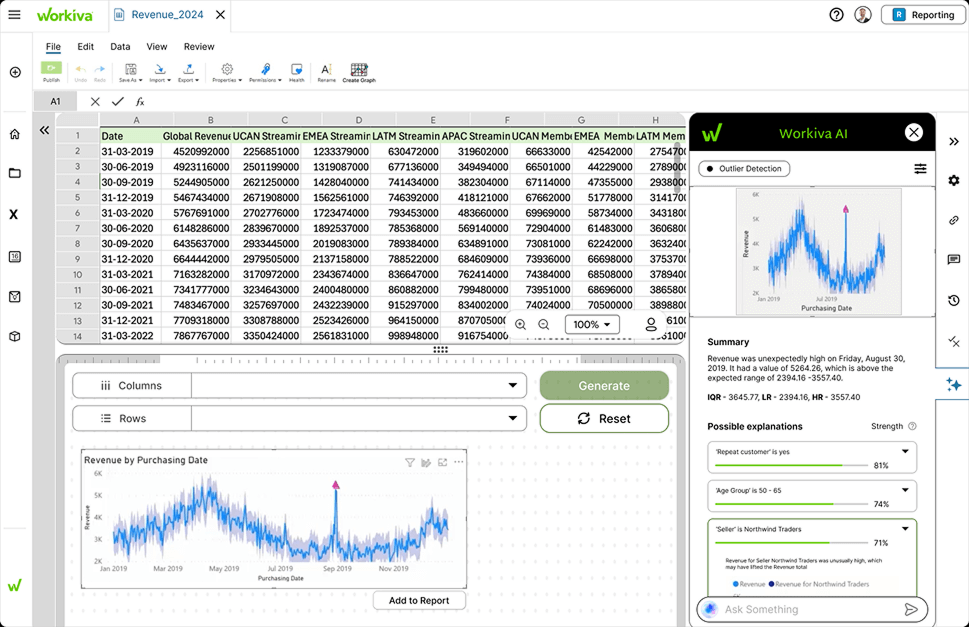
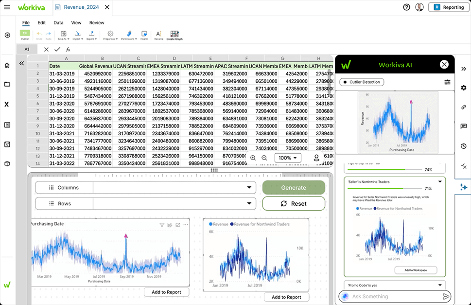
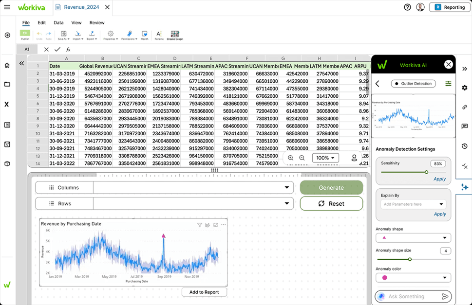

AI-Powered Anomaly Detection for Workiva
An AI assist for financial analysts who hunt for anomalies in collaborative spreadsheets. Cuts down the manual scanning so review moves faster.
- 01 Research Interviewed 6 analysts and mapped the review journey. The problem wasn't finding anomalies, it was trusting them.
- 02 Design Designed an AI panel that sits beside the spreadsheet, pins each anomaly, and ranks the likely reasons behind it.
- 03 Outcome A projected 45% cut in review time, with 89% anomaly detection accuracy.
Review couldn't keep up
Workiva users were spending 73% more time than necessary reviewing collaborative reports for data anomalies and formatting inconsistencies. Datasets kept growing, compliance deadlines kept tightening, and the review was still done by eye.
How might we help analysts trust what an AI flags in their spreadsheet?
Three problems, in their words
I interviewed 6 Business Analysts and MIS students using an 18-question guide, then ran a thematic analysis. Everyone relied on domain knowledge plus manual scanning. Three problems came up again and again.
A flag without a reason is just more work
"Ideally it would tell me what the problem could be as well. Maybe we can tell me that it's possibly because this variable seems to have too many missing values."
Business Analyst
"Something's wrong" isn't an answer
"It should actually tell you where exactly is the error instead of just telling that there is something wrong."
MIS graduate student
Two users with opposite needs
Newer analysts couldn't tell an anomaly from a normal spike and wanted guidance. Senior analysts wanted speed and control: "Show me the anomalies, let me decide what to do with them."

The pop-up we dropped
My first sketches put the AI in a floating pop-up over the spreadsheet, with its own projects panel. It looked clean on paper, but it covered the data the analyst was trying to check.
Interviewees kept describing the same habit: they looked at the numbers and the chart at the same time. So I moved the AI into a docked side panel. The spreadsheet, the chart and the explanation all stay visible together.

From raw sheet to report
Each problem became one step in the flow: detect the outlier, explain it, tune it if needed, and add it to the report.

Find it, understand it, tune it
Pinpointed, not just flagged
The AI marks the exact point on the chart and states it plainly: the date, the value, and the expected range it fell outside. Answers problem 02.

Reasons, ranked by strength
Each flag comes with possible explanations scored by strength. Opening one shows the evidence chart, which the analyst can add to their workspace next to the original. Answers problem 01.

Control for experts, defaults for everyone else
Newer analysts never need to leave the defaults. Senior analysts can open settings to change sensitivity, pick the parameters to explain by, and restyle how anomalies are marked. Answers problem 03.

Impact & learnings
Explainable comes before accurate
An 89% accurate flag that nobody trusts saves no time. For enterprise analysts, the explanation is what turns a flag into a decision.
Where the AI sits changes how much people trust it
Moving from a pop-up to a docked panel was a layout change, but it was really about trust. Analysts believe what they can check against the data.
Design for both ends, then hide the difference
Novice and expert needs looked like they conflicted. Good defaults plus settings one tap away served both without two separate modes.